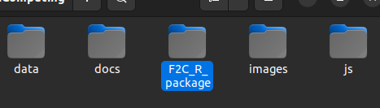
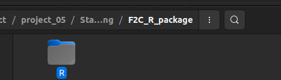
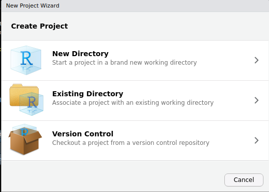
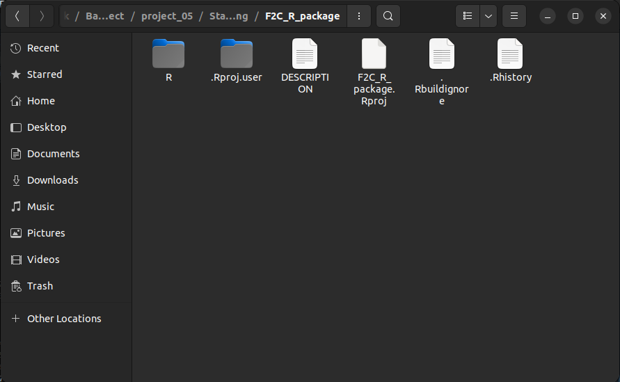
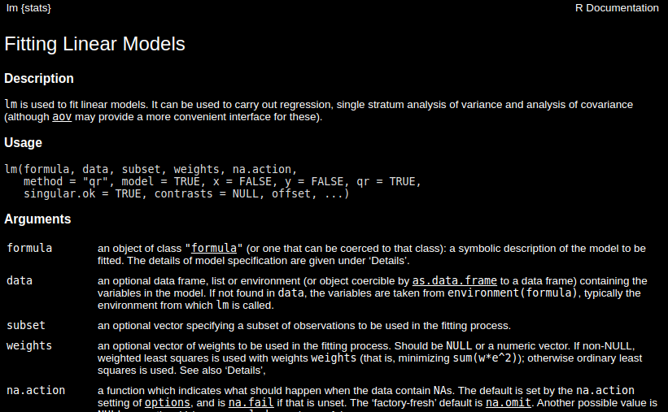
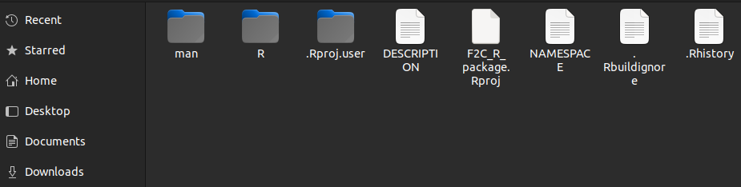
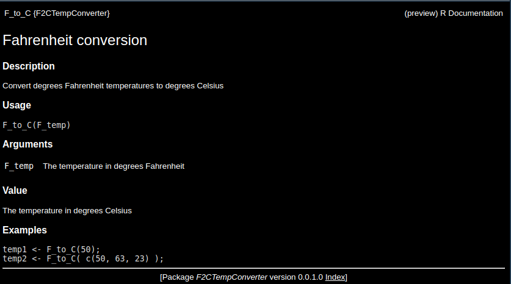

Chapter 8 Building R Packages
8.1 Introduction
In the second chapter we introduced about functions and we later talked about package functions, here we will now focus on how to build those packages. Packages are bundles of code and data to perform created by R users or community to perform a set of goven tasks.
In this course you have encountered several packages like dplyr, plyr and ggplot2 and might have installed one or many of them. Packages provide a ready-to-use functions and data sets that produce results faster without the need to write everything from scratch. Here we will discuss how you can create you own package in R. This will give you a deeper appreciation of the packages you rely on daily basis and how they are built.
CRAN(The Comprehensive R Archive Network) and GitHub provide a repository where one can host and install packages to their local environments.
In this guide, we will walk through how to create a package and host the packages either on GitHub.
8.2 Prerequisites
Before we jump in, there are a few packages you will want to have ready to help us along the way. We will install devtools and roxygen2.
Install the packages
# Install devtools
install.packages("devtools")
# Install roxygen
install.packages("roxygen2")It might be necessary to restart R studio after installing the above packages
8.3 Building a simple R package
Here is where the fun begin! We will create a simple R package to serve you with the basics of building packages. The package will involve two functions;
- A function to convert temperature from degrees Fahrenheit(\(^oF\)) to degrees Celsius(\(^oC\)).
- A function to convert temperature from degrees Celsius(\(^oC\)) to degrees Fahrenheit(\(^oF\)).
Step 1
Create a folder that will hold the whole R package, in our case we will name the folder F2C_R_package like the one below.

Step 2
Currently this folder is empty, lets create another folder inside this F2C_R_package folder and name it R.

Here is where all the R scripts are stored. It can hold any amount of R files and each R file can hold any amount of R functions. You could example give each function each own file or insert more than function in a file.
For large projects it is recommended to group similar functions in the same R file.
Step 3
In our new R package, we will write both the two functions discussed above in the same file called, temp_conversion.R that has the code below;
# Convert from Fahrenheit to Celsius
F_to_C <- function(F_temp){
C_temp <- (F_temp -32) * 5/9
return (C_temp)
}
# Convert from Celsius to Fahrenheit
C_to_F <- function(C_temp){
F_temp <- (C_temp * 9/5) + 32
return(F_temp)
}That is the whole file for now, it has less than 15 lines of code.

Step 4
Next, create a file called DESCRIPTION in the F2C_R_package directory. This will be a plain text file with no extension and it will hold some of the metadata on the R package. In our case, it will hold the following lines of code specifying the package name, type, title and the version number.
Package: F2CTempConverter
Type: Package
Title: Temperature Conversion Package for Demonstration
Version: 0.0.1.0This is now a working R package and can be loaded by;
## Loading required package: usethis## ℹ Loading F2CTempConverter## [1] 26.11111## [1] 68After this its good to add documentation to help users know what the function does.
8.4 Making A New R Project
What we just did was an overview of how a package is created. Lets now explore how you can create a complete package with documentation.
To do this go to File > New Project ... and the dialog box below should pop up.

We will choose the Existing Directory option then browse to the F2C_R_package and click Create Project to create project from an existing directory. Now you should be able to see the project inside the package directory.

8.5 Adding Documentation
Documentation helps others use the package that we have built, furthermore we can refer to the documentation to refer what we did after a long time. Documentation shows up in the Help tab of R Studio when running the function help. Just run the following in R studio to understand what I meant.
help(lm)? does the same thing as help
?lmYou see there a tab that pops up with a documentation on Linear Models

The roxygen2 package is used to make these helpful markdown files. We will then add some explanations to the code file, temp_conversion.R. Update the code to look the one below.
#' Fahrenheit conversion
#'
#' Convert degrees Fahrenheit temperatures to degrees Celsius
#' @param F_temp The temperature in degrees Fahrenheit
#' @return The temperature in degrees Celsius
#' @examples
#' temp1 <- F_to_C(50);
#' temp2 <- F_to_C( c(50, 63, 23) );
#' @export
F_to_C <- function(F_temp){
C_temp <- (F_temp - 32) * 5/9;
return(C_temp);
}
#' Celsius conversion
#'
#' Convert degrees Celsius temperatures to degrees Fahrenheit
#' @param C_temp The temperature in degrees Celsius
#' @return The temperature in degrees Fahrenheit
#' @examples
#' temp1 <- C_to_F(22);
#' temp2 <- C_to_F( c(-2, 12, 23) );
#' @export
C_to_F <- function(C_temp){
F_temp <- (C_temp * 9/5) + 32;
return(F_temp);
}The size of the code has increased but we now have helpful reminders to use each function. Lets go through each line type and explain;
#' Fahrenheit conversionand#' Celsius conversionare the function titles.@param F_tempand@param C_tempare the function parameters or arguments .' @return ...is used to indicate the return value of the function.#' @examples ...is shows an example use case of the function.
The format explained above is called the Roxygen format and there are more tags recognized by the roxygen2 package. For more information visit Karl Broman’s page. This format makes it easy to create files in markdown for documentation.
Now that we have the documentation ready, lets open the project as guided earlier and run the following in the console.
library(roxygen2); # Read in the roxygen2 R package
roxygenise(); # Builds the help filesand here is how our package will look like. 
“man” and a plain text NAMESPACE have been added. The man directory holds the written help files while the NAMESPACE works with R to integrate them into the package correctly. The NAMESPACE file should not be edited by hand. Here are the contents of the namespace file.
# Generated by roxygen2: do not edit by hand
export(C_to_F)
export(F_to_C)Inside the man directory there are two markdown files for the C_to_F and F_to_C functions. Feel free to load the package
library(devtools);
load_all("F2C_R_package")as earlier and ask for help with F_to_C.
?F_to_CThe below will be presented in the ‘Help’ tab of R Studio. 
8.6 Uploading and Installing from Github
Now that we have package read and working we can upload to github for sharing and version control. Follow the steps below to get your package hosted and ready for sharing.
Step 1: Create a github repo
- Visit github and sign in(or sign up if you don’t have an account)
- Click the New button to create a new repository.
- Name the repository ideally the same as the package name. In our case we will name our repository
F2C_R_package. Add a description and make the repository public so that anyone can access it. Don’t initialize a README file since you will pushing your files from R Studio. - Finally click Create repository.
Step 2: Set up Git in R Studio
- Open your package project in R Studio.
- Go to
Tools > Project Options > Git/SVNand selectGitto enable version control. - To commit you package to GitHub, first make sure you have git installed locally then link your R Studio project to your GitHub repository using the following commands in the terminal.
# Intialize git in the project
git init
# Add all the files
git add .
# Commit files with a message
git commit -m "First upload of F2C_R_package"
# Add your github repository as the remote
git remote add origin https://github.com/your-username/F2C_R_package.git
# Push your commit to github
git push -u origin mainReplace your-username with your actual Github username. This will push the package files to GitHub.
Step 3: Install your Package from Github on Any Machine
Now, that your package is ready on Github, you can use the devtools package in R:
- Open an R session.
- Install devtools if you haven’t already(we installed it earlier)
install.packages("devtools")- Use
devtools::install_githubto install the packge from Github.
devtools::install_github("your-username/F2C_R_package")Remember to replace "your-username" with you actual github details. R will download and install the package from GitHub. You can now load it via
library(F2C_R_package)Additional Tips
- remember to update your repo whenever you make changes to the package.
- Add a README file for documentation on how the file works and how to install it.
You package is now on GitHub and ready for installation and use!
8.7 Hands-on Exercises
Create a package called weight converter that converts mass from Kilograms(kg) to Pounds(lb) and vice versa.
- Tag it as version
0.0.1in theDESCRIPTIONfile. - Add necessary documentations
- Upload it to Github
- Add README file to show how to install and use the file
- Install on your local machine from GitHub using
devtoolslibrary. - Finally, test your newly installed package and run some code.
Solution
________________________________________________________________________________